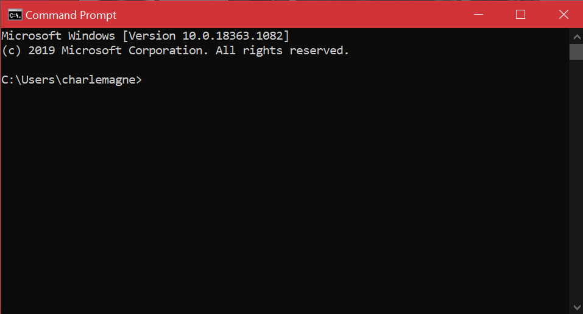
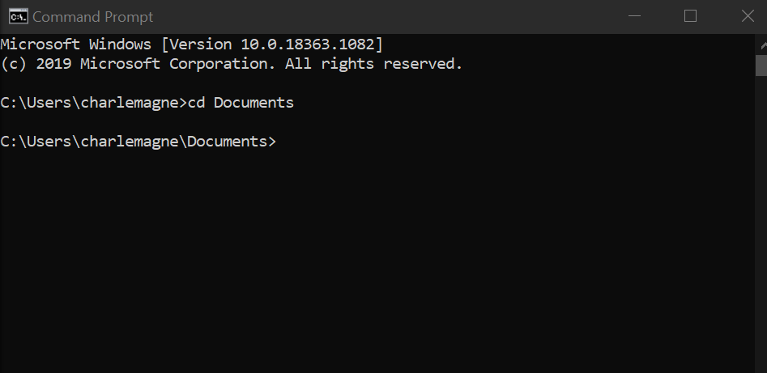
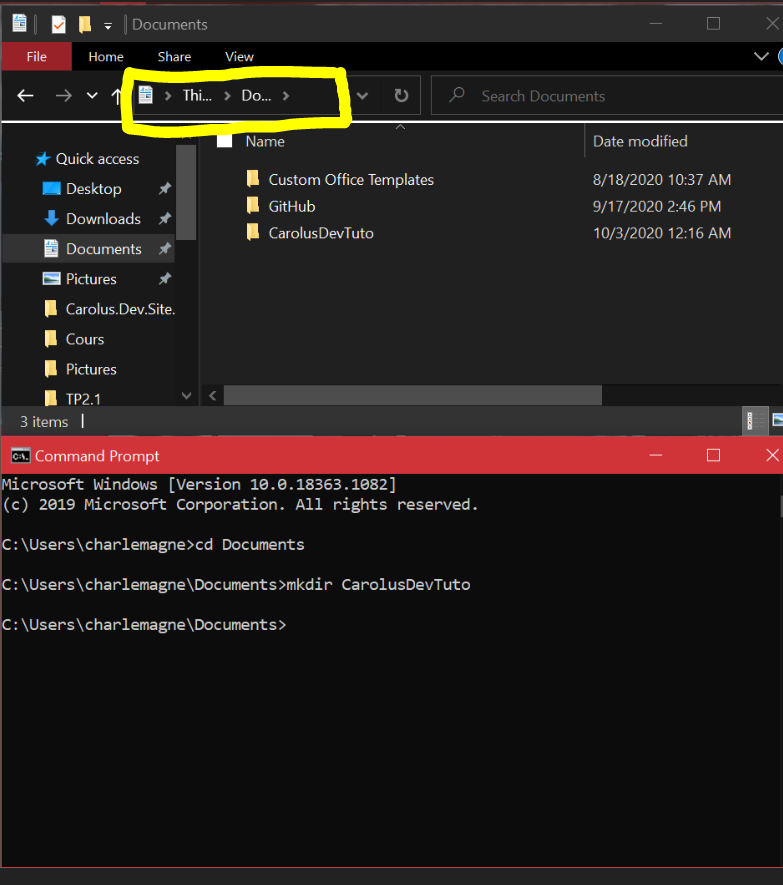
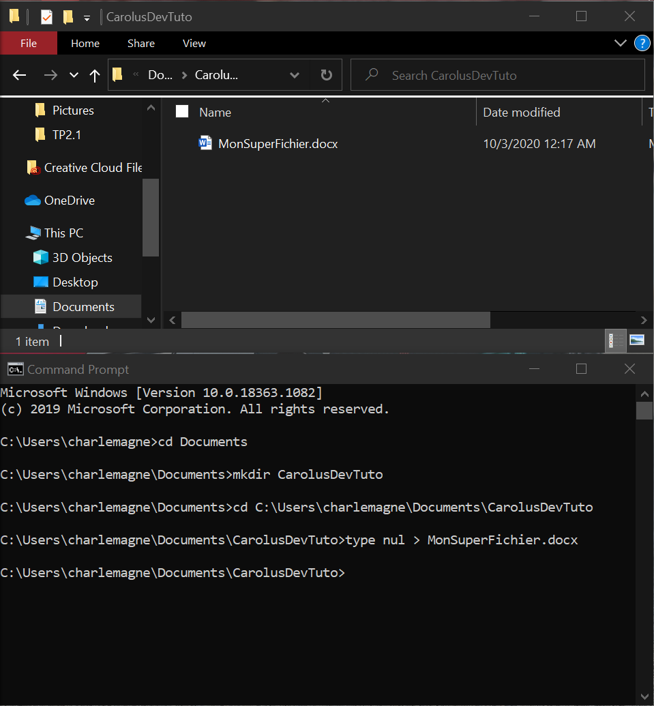

Dans ce court tutoriel vous allez apprendre à maitriser les bases de l’invite de commande Windows. Vous verrez comment naviguer dans vos répertoires et comment manipuler des fichiers en ligne de commandes.
Pour commencer, ouvrez votre invite de commande. Pour se faire faites un clic droit sur l’icone Windows de votre barre des tâches. Puis cliquez sur Commande Prompt. Une fenêtre comme celle-ci-dessous devrait s’ouvrir :
La première chose que nous allons à prendre à faire de se déplacer dans nos répertoires. Dans l’invite de commande tapez les lettres cd suivies de l’adresse ou vous voulez aller. Essayons d’aller dans le fichier Documents de Windows par exemple. Faites tout simplement cd Documents, comme si dessous :
Un autre moyen d’aller dans un répertoire plus rapidement et de copier en faisant ctrl + c le chemin entouré en jaune puis de le coller en faisant ctrl + v dans l’invite de commande, toujours précédé par cd.
Tapez mkdir nomRepertoire comme si dessous :
Pour le supprimer tapez rmdir nomRepertoire
Dirigez vous maintenant depuis votre invite de commande dans le répertoire que vous venez de créer.
Pour créer un fichier tapez type nul > nomFichier.txt ou nomFichier.docx ou autre. Pour le supprimer tapez la commande del nomFichier.txt.
Vous maitrisez maintenant les bases de l’invite de commande Windows, pour en savoir plus je publierais de nouveaux articles à ce sujet prochainement.